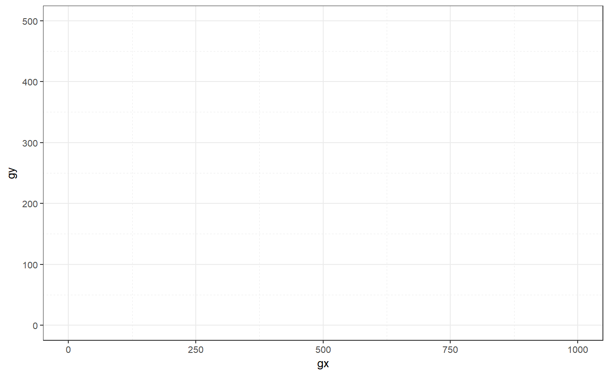
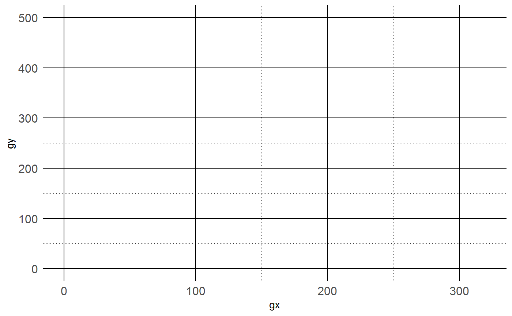

These functions output themes for specific functions. You can customize any
theme by changing the default arguments and also by passing more arguments to
ggplot2::theme() (via ...).
theme_map_tag(panel.grid.major = element_line(colour = "black"), panel.grid.minor = element_line(colour = "black", linetype = "dotted"), panel.background = element_rect(fill = "white"), plot.title = element_text(size = 20), plot.subtitle = element_text(size = 12), plot.caption = element_text(size = 8), legend.position = "top", legend.title = element_blank(), axis.ticks = element_blank(), axis.text = element_text(size = 12), ...) theme_map_quad(axis.text = element_blank(), panel.background = element_rect(fill = "white"), panel.grid.minor = element_blank(), panel.grid.major = element_blank(), legend.position = "none", plot.title = element_text(size = 20), plot.subtitle = element_text(size = 12), panel.border = element_rect(colour = "black", fill = NA), axis.ticks.length = unit(-0.1, "cm"), ...) theme_default(p, panel.grid.minor = element_line(linetype = "dashed"), ...)
| panel.grid.major | major grid lines ( |
|---|---|
| panel.grid.minor | minor grid lines ( |
| panel.background | background of plotting area, drawn underneath plot
( |
| plot.title | plot title (text appearance) ( |
| plot.subtitle | plot subtitle (text appearance) ( |
| plot.caption | caption below the plot (text appearance)
( |
| legend.position | the position of legends ("none", "left", "right", "bottom", "top", or two-element numeric vector) |
| legend.title | title of legend ( |
| axis.ticks | tick marks along axes ( |
| axis.text | tick labels along axes ( |
| ... | Additional arguments passed to |
| panel.border | border around plotting area, drawn on top of plot so that
it covers tick marks and grid lines. This should be used with
|
| axis.ticks.length | length of tick marks ( |
| p | A ggplot. |
theme_map_tag()#> List of 10 #> $ axis.text :List of 11 #> ..$ family : NULL #> ..$ face : NULL #> ..$ colour : NULL #> ..$ size : num 12 #> ..$ hjust : NULL #> ..$ vjust : NULL #> ..$ angle : NULL #> ..$ lineheight : NULL #> ..$ margin : NULL #> ..$ debug : NULL #> ..$ inherit.blank: logi FALSE #> ..- attr(*, "class")= chr [1:2] "element_text" "element" #> $ axis.ticks : list() #> ..- attr(*, "class")= chr [1:2] "element_blank" "element" #> $ legend.title : list() #> ..- attr(*, "class")= chr [1:2] "element_blank" "element" #> $ legend.position : chr "top" #> $ panel.background:List of 5 #> ..$ fill : chr "white" #> ..$ colour : NULL #> ..$ size : NULL #> ..$ linetype : NULL #> ..$ inherit.blank: logi FALSE #> ..- attr(*, "class")= chr [1:2] "element_rect" "element" #> $ panel.grid.major:List of 6 #> ..$ colour : chr "black" #> ..$ size : NULL #> ..$ linetype : NULL #> ..$ lineend : NULL #> ..$ arrow : logi FALSE #> ..$ inherit.blank: logi FALSE #> ..- attr(*, "class")= chr [1:2] "element_line" "element" #> $ panel.grid.minor:List of 6 #> ..$ colour : chr "black" #> ..$ size : NULL #> ..$ linetype : chr "dotted" #> ..$ lineend : NULL #> ..$ arrow : logi FALSE #> ..$ inherit.blank: logi FALSE #> ..- attr(*, "class")= chr [1:2] "element_line" "element" #> $ plot.title :List of 11 #> ..$ family : NULL #> ..$ face : NULL #> ..$ colour : NULL #> ..$ size : num 20 #> ..$ hjust : NULL #> ..$ vjust : NULL #> ..$ angle : NULL #> ..$ lineheight : NULL #> ..$ margin : NULL #> ..$ debug : NULL #> ..$ inherit.blank: logi FALSE #> ..- attr(*, "class")= chr [1:2] "element_text" "element" #> $ plot.subtitle :List of 11 #> ..$ family : NULL #> ..$ face : NULL #> ..$ colour : NULL #> ..$ size : num 12 #> ..$ hjust : NULL #> ..$ vjust : NULL #> ..$ angle : NULL #> ..$ lineheight : NULL #> ..$ margin : NULL #> ..$ debug : NULL #> ..$ inherit.blank: logi FALSE #> ..- attr(*, "class")= chr [1:2] "element_text" "element" #> $ plot.caption :List of 11 #> ..$ family : NULL #> ..$ face : NULL #> ..$ colour : NULL #> ..$ size : num 8 #> ..$ hjust : NULL #> ..$ vjust : NULL #> ..$ angle : NULL #> ..$ lineheight : NULL #> ..$ margin : NULL #> ..$ debug : NULL #> ..$ inherit.blank: logi FALSE #> ..- attr(*, "class")= chr [1:2] "element_text" "element" #> - attr(*, "class")= chr [1:2] "theme" "gg" #> - attr(*, "complete")= logi FALSE #> - attr(*, "validate")= logi TRUEtheme_map_quad()#> List of 9 #> $ axis.text : list() #> ..- attr(*, "class")= chr [1:2] "element_blank" "element" #> $ axis.ticks.length:Class 'unit' atomic [1:1] -0.1 #> .. ..- attr(*, "valid.unit")= int 1 #> .. ..- attr(*, "unit")= chr "cm" #> $ legend.position : chr "none" #> $ panel.background :List of 5 #> ..$ fill : chr "white" #> ..$ colour : NULL #> ..$ size : NULL #> ..$ linetype : NULL #> ..$ inherit.blank: logi FALSE #> ..- attr(*, "class")= chr [1:2] "element_rect" "element" #> $ panel.border :List of 5 #> ..$ fill : logi NA #> ..$ colour : chr "black" #> ..$ size : NULL #> ..$ linetype : NULL #> ..$ inherit.blank: logi FALSE #> ..- attr(*, "class")= chr [1:2] "element_rect" "element" #> $ panel.grid.major : list() #> ..- attr(*, "class")= chr [1:2] "element_blank" "element" #> $ panel.grid.minor : list() #> ..- attr(*, "class")= chr [1:2] "element_blank" "element" #> $ plot.title :List of 11 #> ..$ family : NULL #> ..$ face : NULL #> ..$ colour : NULL #> ..$ size : num 20 #> ..$ hjust : NULL #> ..$ vjust : NULL #> ..$ angle : NULL #> ..$ lineheight : NULL #> ..$ margin : NULL #> ..$ debug : NULL #> ..$ inherit.blank: logi FALSE #> ..- attr(*, "class")= chr [1:2] "element_text" "element" #> $ plot.subtitle :List of 11 #> ..$ family : NULL #> ..$ face : NULL #> ..$ colour : NULL #> ..$ size : num 12 #> ..$ hjust : NULL #> ..$ vjust : NULL #> ..$ angle : NULL #> ..$ lineheight : NULL #> ..$ margin : NULL #> ..$ debug : NULL #> ..$ inherit.blank: logi FALSE #> ..- attr(*, "class")= chr [1:2] "element_text" "element" #> - attr(*, "class")= chr [1:2] "theme" "gg" #> - attr(*, "complete")= logi FALSE #> - attr(*, "validate")= logi TRUE# Compose `theme_default()` with `g(f(x))` or `f(x) %>% g()` # NOT as ggplot2 themes. DONT DO THIS: ` f(x) + g()`. theme_default(map_gx_gy_elev(bciex::bci_elevation))